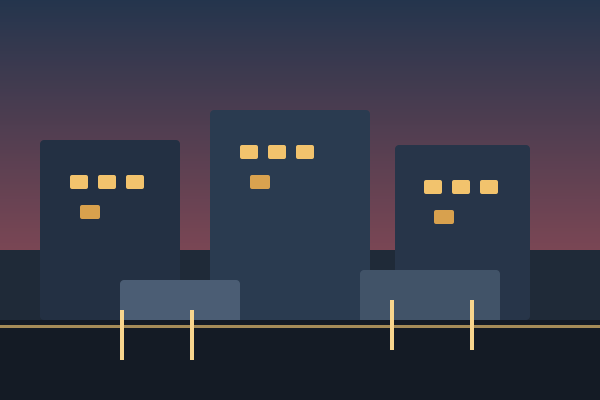

Finding stillness by the water

The coast always feels a little farther away than the map suggests. Between the cliffs and the tide, there is a rhythm that invites slower steps, deeper breaths, and a different sense of time. In the early morning, the air is cool and the horizon glows before the day decides what it wants to become.
Every path leads to some version of the same truth: the landscape is not simply something to move through, but something to listen to. The sea keeps its own pace. The wind shapes the dunes. The light changes the mood of a place by the minute. That sense of observation becomes its own kind of adventure.
By the time the sun lifts higher, the shore feels less like a destination and more like a return. It is a place to notice details, collect small memories, and remember that calm is not the absence of motion. It is the art of moving with intention.